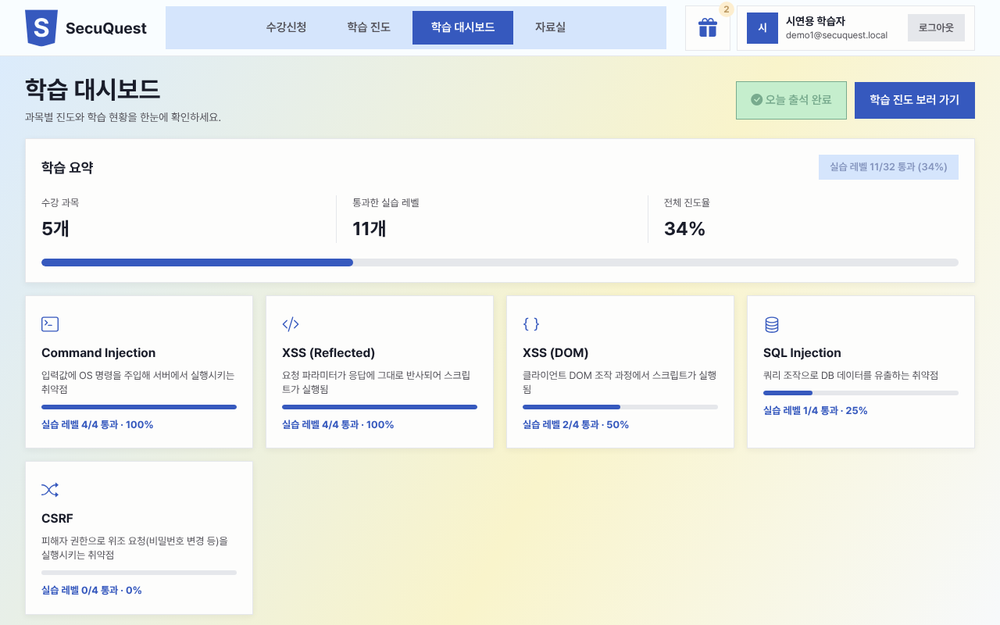
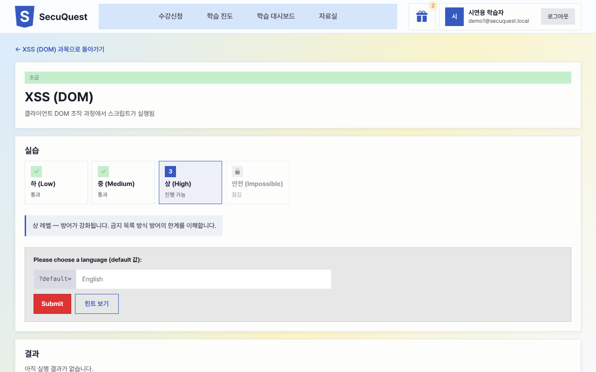
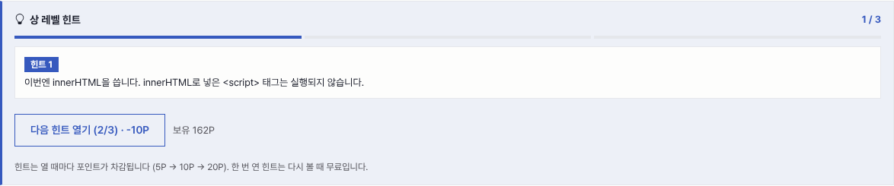
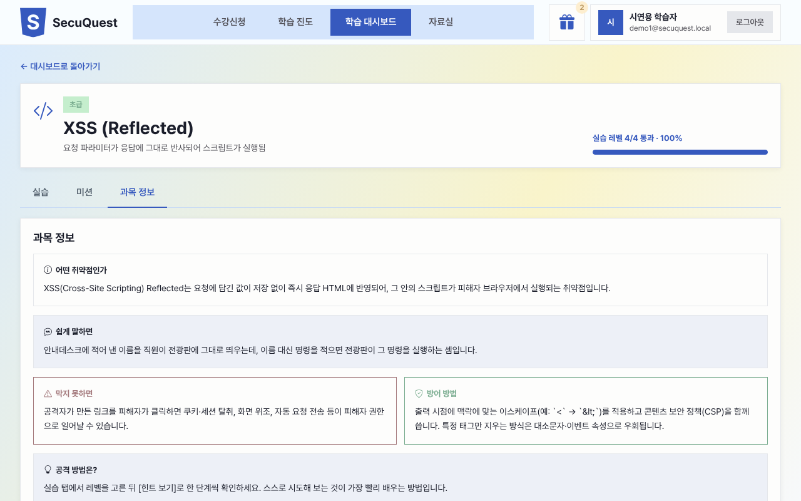
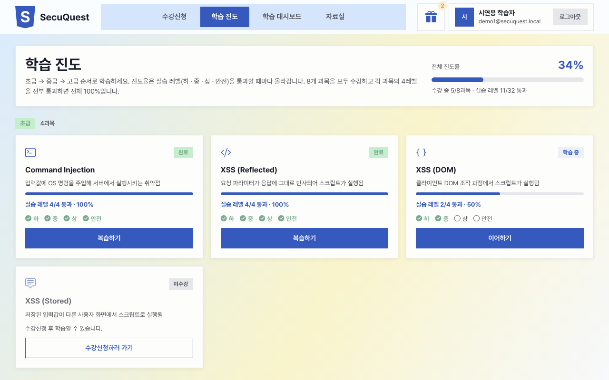
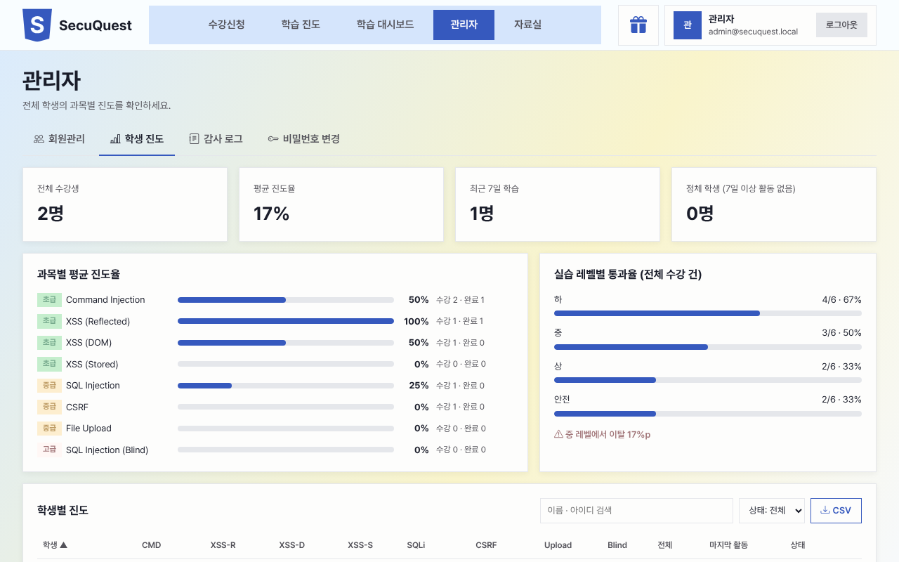
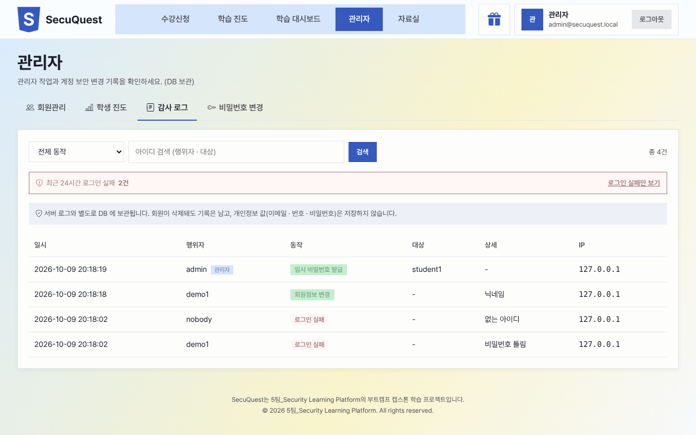

엄격한 CSP 를 켜자 XSS 실습이 멈춤
- 원인
srcdociframe 은 부모 페이지의 CSP 를 그대로 상속 → 실습용 스크립트까지 차단- 해결
- 실습 전용 페이지로 분리해 그 경로에만 실습용 CSP(인라인 허용 · 외부 통신 차단) 적용,
postMessage로 내용 전달
앱 전체는 script-src 'self' 유지 + 실습은 정상 동작
Portfolio · 웹 보안 실습형 학습 플랫폼
8개 웹 취약점을 하 → 중 → 상 → 안전 4단계로 직접 실습하며, 공격이 통하는 코드와 막히는 코드의 차이를 체감하도록 만든 한국어 학습 플랫폼입니다.

Overview
취약점을 이론으로만 배우면 "왜 막아야 하는지"가 와닿지 않고, 실제로 공격해 볼 안전한 한국어 실습 환경은 드뭅니다.
같은 취약점을 방어 수준이 다른 4개 레벨로 나눠, 공격이 성공하는 코드부터 완전히 막히는 코드까지 순서대로 직접 시도하게 했습니다.
위험한 실습 코드는 네트워크가 끊긴 격리 컨테이너에서만 실행하고, 서비스 자체는 CSP · CSRF · Rate Limit · 감사 로그로 보호합니다.
Key Features
학습자가 막힘없이 "개념 → 실습 → 방어 확인"으로 이어지도록, 그리고 운영자가 이탈 지점을 볼 수 있도록 설계했습니다.






Architecture & Security
"위험한 실습은 격리된 곳에서만, 서비스는 표준 보안으로 안전하게" — 두 영역을 물리적으로 분리했습니다.
script-src 'self', API default-src 'none', 클릭재킹 · MIME 스니핑 방어Problem Solving
각 사례는 원인 → 해결 → 검증을 저장소 docs/ 에 문서로 남겼습니다.
srcdoc iframe 은 부모 페이지의 CSP 를 그대로 상속 → 실습용 스크립트까지 차단postMessage 로 내용 전달audit_logs 테이블에 변경과 같은 트랜잭션으로 기록 (변경 성공 ⇔ 기록 성공), 개인정보 값은 미기록Tech & Role
1인 개발로 기획부터 배포 환경 구성, 점검까지 전 과정을 진행했습니다.
Vue 3 (Composition API) · Vite · Vue Router · Pinia · Axios · Bootstrap 5 (SCSS) · 디자인 토큰
Python 3.12 · Flask 3 · SQLAlchemy · Alembic · Flask-WTF(CSRF) · Flask-Limiter · bcrypt
MariaDB 11.4 (테이블 10 · 마이그레이션 6) · Redis 7 (세션 · Rate Limit)
Docker Compose · Nginx 1.27 · 격리 Sandbox 컨테이너 · Gmail SMTP · SMS 연동
| 기획 · 설계 | 학습 흐름(개념 → 4단계 실습 → 방어 확인) 설계, 화면 · API · ERD 설계, 진도율 · 보상 규칙 정의 |
|---|---|
| 프론트엔드 | 화면 14개 · 컴포넌트 구현, 디자인 토큰 기반 UI, 실습 프레임 · 힌트 패널, 휴대폰 · 태블릿 반응형 |
| 백엔드 | REST API 48개, 인증 · 회원 · 아이디/비밀번호 찾기(이메일 · SMS), 실습 판정 · 레벨 잠금, 보상 · 출석, 관리자 · 감사 로그 |
| 보안 · 인프라 | Sandbox 격리 설계 · 실측 점검, Nginx 경로별 CSP · 보안 헤더, CSRF · Rate Limit, Docker Compose 원클릭 실행 |
| 품질 · 문서 | 전 기능 E2E 점검(브라우저 자동화), 32레벨 수동 통과 검증, 작업 기록 · 개념 설명 문서 79개, 5분 시연 시나리오 |